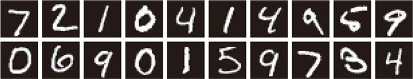
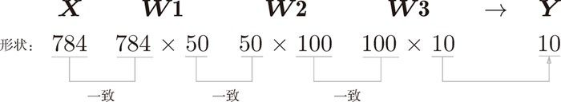
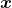
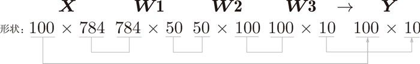

和求解机器学习问题的步骤（分成学习和推理两个阶段进行）一样，使用神经网络解决问题时，也需要首先使用训练数据（学习数据）进行权重参数的学习；进行推理时，使用刚才学习到的参数，对输入数据进行分类。
和求解机器学习问题的步骤（分成学习和推理两个阶段进行）一样，使用神经网络解决问题时，也需要首先使用训练数据（学习数据）进行权重参数的学习；进行推理时，使用刚才学习到的参数，对输入数据进行分类。
介绍完神经网络的结构之后，现在我们来试着解决实际问题。这里我们来进行手写数字图像的分类。假设学习已经全部结束，我们使用学习到的参数，先实现神经网络的“推理处理”。这个推理处理也称为神经网络的前向传播（forward propagation）。
这里使用的数据集是 MNIST 手写数字图像集。MNIST 是机器学习领域最有名的数据集之一，被应用于从简单的实验到发表的论文研究等各种场合。实际上，在阅读图像识别或机器学习的论文时，MNIST 数据集经常作为实验用的数据出现。
MNIST 数据集是由 0 到 9 的数字图像构成的（图 3-24）。训练图像有 6 万张，测试图像有 1 万张，这些图像可以用于学习和推理。MNIST 数据集的一般使用方法是，先用训练图像进行学习，再用学习到的模型度量能在多大程度上对测试图像进行正确的分类。

图 3-24 MNIST 图像数据集的例子
MNIST 的图像数据是 28 像素 × 28 像素的灰度图像（1 通道），各个像素的取值在 0 到 255 之间。每个图像数据都相应地标有“7”“2”“1”等标签。
本书提供了便利的 Python 脚本 mnist.py，该脚本支持从下载 MNIST 数据集到将这些数据转换成 NumPy 数组等处理（mnist.py 在 dataset 目录下）。使用 mnist.py 时，当前目录必须是 ch01、ch02、ch03、…、ch08 目录中的一个。使用 mnist.py 中的 load_mnist() 函数，就可以按下述方式轻松读入 MNIST 数据。
import sys, os
sys.path.append(os.pardir) # 为了导入父目录中的文件而进行的设定
from dataset.mnist import load_mnist
# 第一次调用会花费几分钟……
(x_train, t_train), (x_test, t_test) = load_mnist(flatten=True,
normalize=False)
# 输出各个数据的形状
print(x_train.shape) # (60000, 784)
print(t_train.shape) # (60000,)
print(x_test.shape) # (10000, 784)
print(t_test.shape) # (10000,)
首先，为了导入父目录中的文件，进行相应的设定 7。然后，导入 dataset/mnist.py 中的 load_mnist 函数。最后，使用 load_mnist 函数，读入 MNIST 数据集。第一次调用 load_mnist 函数时，因为要下载 MNIST 数据集，所以需要接入网络。第 2 次及以后的调用只需读入保存在本地的文件（pickle 文件）即可，因此处理所需的时间非常短。
7观察本书源代码可知，上述代码在 mnist_show.py 文件中。mnist_show.py 文件的当前目录是 ch03，但包含 load_mnist() 函数的 mnist.py 文件在 dataset 目录下。因此，mnist_show.py 文件不能跨目录直接导入 mnist.py 文件。sys.path.append(os.pardir) 语句实际上是把父目录 deep-learning-from-scratch 加入到 sys.path（Python 的搜索模块的路径集）中，从而可以导入 deep-learning-from-scratch 下的任何目录（包括 dataset 目录）中的任何文件。——译者注
用来读入 MNIST 图像的文件在本书提供的源代码的
dataset目录下。并且，我们假定了这个 MNIST 数据集只能从ch01、ch02、ch03、…、ch08目录中使用，因此，使用时需要从父目录（dataset目录）中导入文件，为此需要添加sys.path.append(os.pardir)语句。
load_mnist 函数以“( 训练图像, 训练标签 )，( 测试图像, 测试标签 )”的形式返回读入的 MNIST 数据。此外，还可以像 load_mnist(normalize=True, flatten=True, one_hot_label=False) 这样，设置 3 个参数。第 1 个参数 normalize 设置是否将输入图像正规化为 0.0～1.0 的值。如果将该参数设置为 False，则输入图像的像素会保持原来的 0～255。第 2 个参数 flatten 设置是否展开输入图像（变成一维数组）。如果将该参数设置为 False，则输入图像为 1 × 28 × 28 的三维数组；若设置为 True，则输入图像会保存为由 784 个元素构成的一维数组。第 3 个参数 one_hot_label 设置是否将标签保存为 one-hot 表示（one-hot representation）。one-hot 表示是仅正确解标签为 1，其余皆为 0 的数组，就像 [0,0,1,0,0,0,0,0,0,0] 这样。当 one_hot_label 为 False 时，只是像 7、2 这样简单保存正确解标签；当 one_hot_label 为 True 时，标签则保存为 one-hot 表示。
load_mnist()函数内部也使用了 pickle 功能（在第 2 次及以后读入时）。利用 pickle 功能，可以高效地完成 MNIST 数据的准备工作。
现在，我们试着显示 MNIST 图像，同时也确认一下数据。图像的显示使用 PIL（Python Image Library）模块。执行下述代码后，训练图像的第一张就会显示出来，如图 3-25 所示（源代码在 ch03/mnist_show.py 中）。
import sys, os
sys.path.append(os.pardir)
import numpy as np
from dataset.mnist import load_mnist
from PIL import Image
def img_show(img):
pil_img = Image.fromarray(np.uint8(img))
pil_img.show()
(x_train, t_train), (x_test, t_test) = load_mnist(flatten=True,
normalize=False)
img = x_train[0]
label = t_train[0]
print(label) # 5
print(img.shape) # (784,)
img = img.reshape(28, 28) # 把图像的形状变成原来的尺寸
print(img.shape) # (28, 28)
img_show(img)
这里需要注意的是，flatten=True 时读入的图像是以一列（一维）NumPy 数组的形式保存的。因此，显示图像时，需要把它变为原来的 28 像素 × 28 像素的形状。可以通过 reshape() 方法的参数指定期望的形状，更改 NumPy 数组的形状。此外，还需要把保存为 NumPy 数组的图像数据转换为 PIL 用的数据对象，这个转换处理由 Image.fromarray() 来完成。
图 3-25 显示 MNIST 图像
下面，我们对这个 MNIST 数据集实现神经网络的推理处理。神经网络的输入层有 784 个神经元，输出层有 10 个神经元。输入层的 784 这个数字来源于图像大小的 28 × 28 = 784，输出层的 10 这个数字来源于 10 类别分类（数字 0 到 9，共 10 类别）。此外，这个神经网络有 2 个隐藏层，第 1 个隐藏层有 50 个神经元，第 2 个隐藏层有 100 个神经元。这个 50 和 100 可以设置为任何值。下面我们先定义 get_data()、init_network()、predict() 这 3 个函数（代码在 ch03/neuralnet_mnist.py 中）。
def get_data():
(x_train, t_train), (x_test, t_test) = \
load_mnist(normalize=True, flatten=True, one_hot_label=False)
return x_test, t_test
def init_network():
with open("sample_weight.pkl", 'rb') as f:
network = pickle.load(f)
return network
def predict(network, x):
W1, W2, W3 = network['W1'], network['W2'], network['W3']
b1, b2, b3 = network['b1'], network['b2'], network['b3']
a1 = np.dot(x, W1) + b1
z1 = sigmoid(a1)
a2 = np.dot(z1, W2) + b2
z2 = sigmoid(a2)
a3 = np.dot(z2, W3) + b3
y = softmax(a3)
return y
init_network() 会读入保存在 pickle 文件 sample_weight.pkl 中的学习到的权重参数 8。这个文件中以字典变量的形式保存了权重和偏置参数。剩余的 2 个函数，和前面介绍的代码实现基本相同，无需再解释。现在，我们用这 3 个函数来实现神经网络的推理处理。然后，评价它的识别精度（accuracy），即能在多大程度上正确分类。
8因为之前我们假设学习已经完成，所以学习到的参数被保存下来。假设保存在 sample_weight.pkl 文件中，在推理阶段，我们直接加载这些已经学习到的参数。——译者注
x, t = get_data()
network = init_network()
accuracy_cnt = 0
for i in range(len(x)):
y = predict(network, x[i])
p = np.argmax(y) # 获取概率最高的元素的索引
if p == t[i]:
accuracy_cnt += 1
print("Accuracy:" + str(float(accuracy_cnt) / len(x)))
首先获得 MNIST 数据集，生成网络。接着，用 for 语句逐一取出保存在 x 中的图像数据，用 predict() 函数进行分类。predict() 函数以 NumPy 数组的形式输出各个标签对应的概率。比如输出 [0.1, 0.3, 0.2, ..., 0.04] 的数组，该数组表示“0”的概率为 0.1，“1”的概率为 0.3，等等。然后，我们取出这个概率列表中的最大值的索引（第几个元素的概率最高），作为预测结果。可以用 np.argmax(x) 函数取出数组中的最大值的索引，np.argmax(x) 将获取被赋给参数 x 的数组中的最大值元素的索引。最后，比较神经网络所预测的答案和正确解标签，将回答正确的概率作为识别精度。
执行上面的代码后，会显示“Accuracy:0.9352”。这表示有 93.52 % 的数据被正确分类了。目前我们的目标是运行学习到的神经网络，所以不讨论识别精度本身，不过以后我们会花精力在神经网络的结构和学习方法上，思考如何进一步提高这个精度。实际上，我们打算把精度提高到 99 % 以上。
另外，在这个例子中，我们把 load_mnist 函数的参数 normalize 设置成了 True。将 normalize 设置成 True 后，函数内部会进行转换，将图像的各个像素值除以 255，使得数据的值在 0.0～1.0 的范围内。像这样把数据限定到某个范围内的处理称为正规化（normalization）。此外，对神经网络的输入数据进行某种既定的转换称为预处理（pre-processing）。这里，作为对输入图像的一种预处理，我们进行了正规化。
以上就是处理 MNIST 数据集的神经网络的实现，现在我们来关注输入数据和权重参数的“形状”。再看一下刚才的代码实现。
下面我们使用 Python 解释器，输出刚才的神经网络的各层的权重的形状。
>>> x, _ = get_data() >>> network = init_network() >>> W1, W2, W3 = network['W1'], network['W2'], network['W3'] >>> >>> x.shape (10000, 784) >>> x[0].shape (784,) >>> W1.shape (784, 50) >>> W2.shape (50, 100) >>> W3.shape (100, 10)
我们通过上述结果来确认一下多维数组的对应维度的元素个数是否一致（省略了偏置）。用图表示的话，如图 3-26 所示。可以发现，多维数组的对应维度的元素个数确实是一致的。此外，我们还可以确认最终的结果是输出了元素个数为 10 的一维数组。

图 3-26 数组形状的变化
从整体的处理流程来看，图 3-26 中，输入一个由 784 个元素（原本是一个 28 × 28 的二维数组）构成的一维数组后，输出一个有 10 个元素的一维数组。这是只输入一张图像数据时的处理流程。
现在我们来考虑打包输入多张图像的情形。比如，我们想用 predict() 函数一次性打包处理 100 张图像。为此，可以把  的形状改为 100 × 784，将 100 张图像打包作为输入数据。用图表示的话，如图 3-27 所示。

图 3-27 批处理中数组形状的变化
如图 3-27 所示，输入数据的形状为 100 × 784，输出数据的形状为 100 × 10。这表示输入的 100 张图像的结果被一次性输出了。比如，x[0] 和 y[0] 中保存了第 0 张图像及其推理结果，x[1] 和 y[1] 中保存了第 1 张图像及其推理结果，等等。
这种打包式的输入数据称为批（batch）。批有“捆”的意思，图像就如同纸币一样扎成一捆。
下面我们进行基于批处理的代码实现。这里用粗体显示与之前的实现的不同之处。
x, t = get_data()
network = init_network()
batch_size = 100 # 批数量
accuracy_cnt = 0
for i in range(0, len(x), batch_size):
x_batch = x[i:i+batch_size]
y_batch = predict(network, x_batch)
p = np.argmax(y_batch, axis=1)
accuracy_cnt += np.sum(p == t[i:i+batch_size])
我们来逐个解释粗体的代码部分。首先是 range() 函数。range() 函数若指定为 range(start, end)，则会生成一个由 start 到 end-1 之间的整数构成的列表。若像 range(start, end, step) 这样指定 3 个整数，则生成的列表中的下一个元素会增加 step 指定的值。我们来看一个例子。
>>> list( range(0, 10) ) [0, 1, 2, 3, 4, 5, 6, 7, 8, 9] >>> list( range(0, 10, 3) ) [0, 3, 6, 9]
在 range() 函数生成的列表的基础上，通过 x[i:i+batch_size] 从输入数据中抽出批数据。x[i:i+batch_n] 会取出从第 i 个到第 i+batch_n 个之间的数据。本例中是像 x[0:100]、x[100:200]……这样，从头开始以 100 为单位将数据提取为批数据。
然后，通过 argmax() 获取值最大的元素的索引。不过这里需要注意的是，我们给定了参数 axis=1。这指定了在 100 × 10 的数组中，沿着第 1 维方向（以第 1 维为轴）找到值最大的元素的索引（第 0 维对应第 1 个维度）9。这里也来看一个例子。
9矩阵的第 0 维是列方向，第 1 维是行方向。——译者注
>>> x = np.array([[0.1, 0.8, 0.1], [0.3, 0.1, 0.6], ... [0.2, 0.5, 0.3], [0.8, 0.1, 0.1]]) >>> y = np.argmax(x, axis=1) >>> print(y) [1 2 1 0]
最后，我们比较一下以批为单位进行分类的结果和实际的答案。为此，需要在 NumPy 数组之间使用比较运算符（==）生成由 True/False 构成的布尔型数组，并计算 True 的个数。我们通过下面的例子进行确认。
>>> y = np.array([1, 2, 1, 0]) >>> t = np.array([1, 2, 0, 0]) >>> print(y==t) [True True False True] >>> np.sum(y==t) 3
至此，基于批处理的代码实现就介绍完了。使用批处理，可以实现高速且高效的运算。下一章介绍神经网络的学习时，我们将把图像数据作为打包的批数据进行学习，届时也将进行和这里的批处理一样的代码实现。